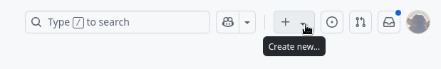
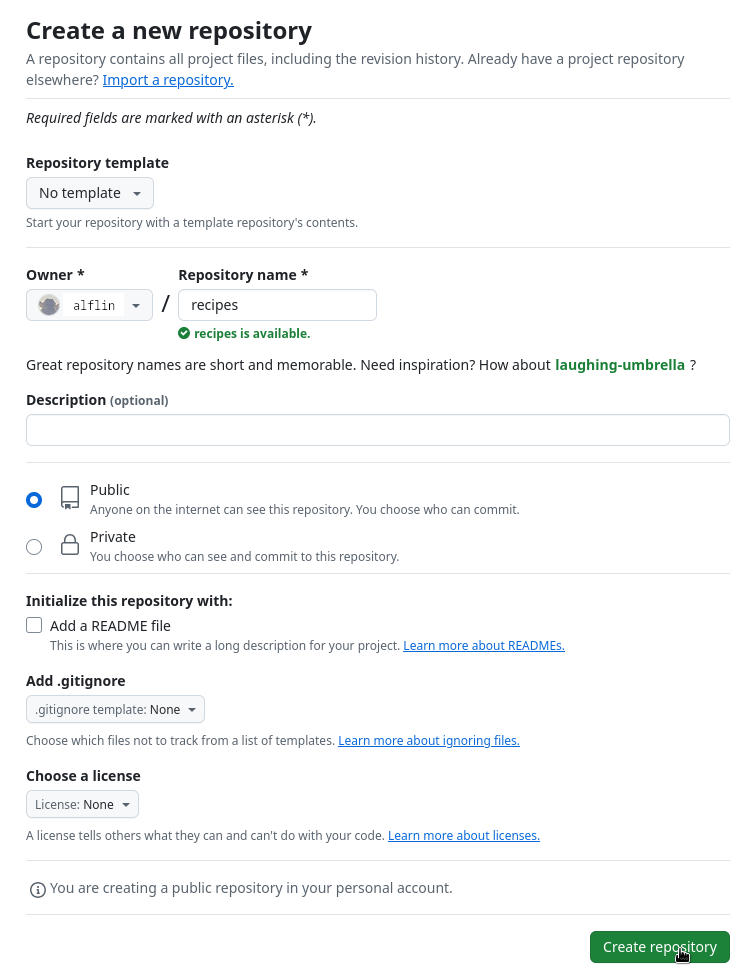
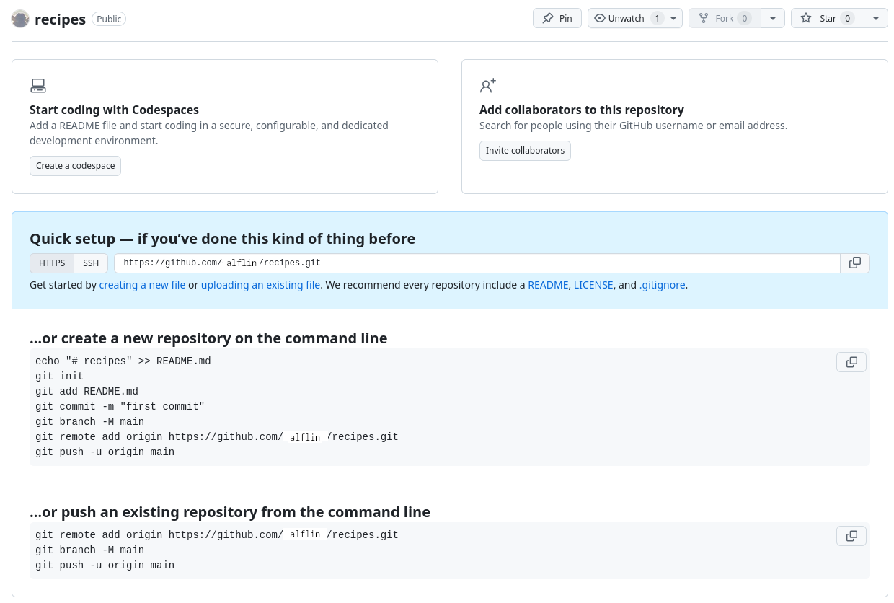
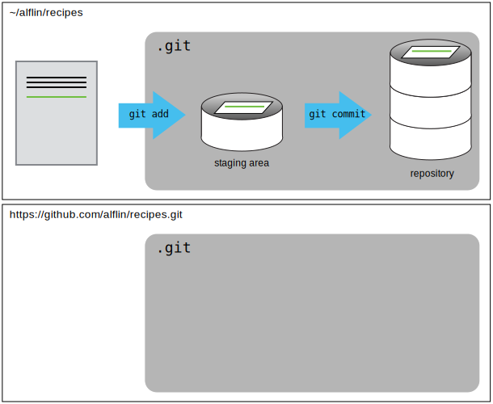
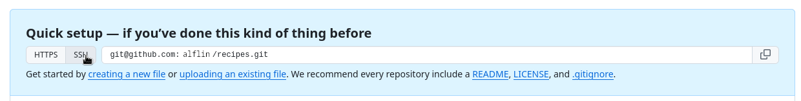
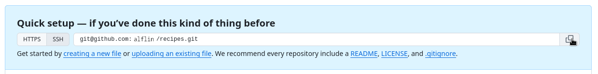
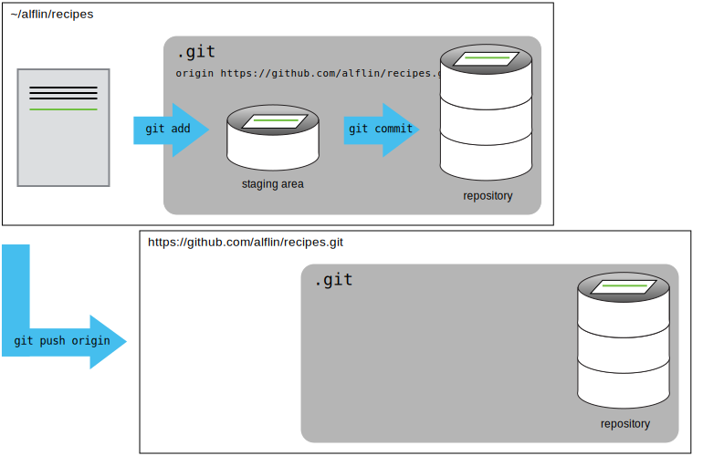

Remotes in GitHub
software, data, lesson, The Carpentries
- How do I share my changes with others on the web?
- Explain what remote repositories are and why they are useful.
- Push to or pull from a remote repository.
Version control really comes into its own when we begin to collaborate with other people. We already have most of the machinery we need to do this; the only thing missing is to copy changes from one repository to another.
Systems like Git allow us to move work between any two repositories. In practice, though, it’s easiest to use one copy as a central hub, and to keep it on the web rather than on someone’s laptop. Most programmers use hosting services like GitHub, Bitbucket or GitLab to hold those main copies; we’ll explore the pros and cons of this in a later episode.
Let’s start by sharing the changes we’ve made to our current project with the world. To this end we are going to create a remote repository that will be linked to our local repository.
1. Create a remote repository
Log in to GitHub, then click on the icon in the top right corner to create a new repository called recipes:

Name your repository “recipes” and then click “Create Repository”.
Note: Since this repository will be connected to a local repository, it needs to be empty. Leave “Initialize this repository with a README” unchecked, and keep “None” as options for both “Add .gitignore” and “Add a license.” See the “GitHub License and README files” exercise below for a full explanation of why the repository needs to be empty.

As soon as the repository is created, GitHub displays a page with a URL and some information on how to configure your local repository:

This effectively does the following on GitHub’s servers:
mkdir recipes
cd recipes
git initIf you remember back to the earlier episode where we added and committed our earlier work on guacamole.md, we had a diagram of the local repository which looked like this:

Now that we have two repositories, we need a diagram like this:

Note that our local repository still contains our earlier work on guacamole.md, but the remote repository on GitHub appears empty as it doesn’t contain any files yet.
2. Connect local to remote repository
Now we connect the two repositories. We do this by making the GitHub repository a remote for the local repository. The home page of the repository on GitHub includes the URL string we need to identify it:

Click on the ‘SSH’ link to change the protocol from HTTPS to SSH.

Copy that URL from the browser, go into the local recipes repository, and run this command:
git remote add origin git@github.com:alflin/recipes.gitMake sure to use the URL for your repository rather than Alfredo’s: the only difference should be your username instead of alflin.
origin is a local name used to refer to the remote repository. It could be called anything, but origin is a convention that is often used by default in git and GitHub, so it’s helpful to stick with this unless there’s a reason not to.
We can check that the command has worked by running git remote -v:
git remote -vorigin git@github.com:alflin/recipes.git (fetch)
origin git@github.com:alflin/recipes.git (push)We’ll discuss remotes in more detail in the next episode, while talking about how they might be used for collaboration.
3. SSH Background and Setup
Before Alfredo can connect to a remote repository, he needs to set up a way for his computer to authenticate with GitHub so it knows it’s him trying to connect to his remote repository.
We are going to set up the method that is commonly used by many different services to authenticate access on the command line. This method is called Secure Shell Protocol (SSH). SSH is a cryptographic network protocol that allows secure communication between computers using an otherwise insecure network.
SSH uses what is called a key pair. This is two keys that work together to validate access. One key is publicly known and called the public key, and the other key called the private key is kept private. Very descriptive names.
You can think of the public key as a padlock, and only you have the key (the private key) to open it. You use the public key where you want a secure method of communication, such as your GitHub account. You give this padlock, or public key, to GitHub and say “lock the communications to my account with this so that only computers that have my private key can unlock communications and send git commands as my GitHub account.”
What we will do now is the minimum required to set up the SSH keys and add the public key to a GitHub account.
The first thing we are going to do is check if this has already been done on the computer you’re on. Because generally speaking, this setup only needs to happen once and then you can forget about it.
We will run the list command to check what key pairs already exist on your computer.
ls -al ~/.sshYour output is going to look a little different depending on whether or not SSH has ever been set up on the computer you are using.
Alfredo has not set up SSH on his computer, so his output is
ls: cannot access '/c/Users/Alfredo/.ssh': No such file or directoryIf SSH has been set up on the computer you’re using, the public and private key pairs will be listed. The file names are either id_ed25519/id_ed25519.pub or id_rsa/id_rsa.pub depending on how the key pairs were set up. Since they don’t exist on Alfredo’s computer, he uses this command to create them.
3.1 Create an SSH key pair
To create an SSH key pair Alfredo uses this command, where the -t option specifies which type of algorithm to use and -C attaches a comment to the key (here, Alfredo’s email):
ssh-keygen -t ed25519 -C "a.linguini@ratatouille.fr"If you are using a legacy system that doesn’t support the Ed25519 algorithm, use: ssh-keygen -t rsa -b 4096 -C "your_email@example.com"
Generating public/private ed25519 key pair.
Enter file in which to save the key (/c/Users/Alfredo/.ssh/id_ed25519):We want to use the default file, so just press Enter.
Created directory '/c/Users/Alfredo/.ssh'.
Enter passphrase (empty for no passphrase):Now, it is prompting Alfredo for a passphrase. Since he is using his kitchen’s laptop that other people sometimes have access to, he wants to create a passphrase. Be sure to use something memorable or save your passphrase somewhere, as there is no “reset my password” option. Note that, when typing a passphrase on a terminal, there won’t be any visual feedback of your typing. This is normal: your passphrase will be recorded even if you see nothing changing on your screen.
Enter same passphrase again:After entering the same passphrase a second time, we receive the confirmation
Your identification has been saved in /c/Users/Alfredo/.ssh/id_ed25519
Your public key has been saved in /c/Users/Alfredo/.ssh/id_ed25519.pub
The key fingerprint is:
SHA256:SMSPIStNyA00KPxuYu94KpZgRAYjgt9g4BA4kFy3g1o a.linguini@ratatouille.fr
The key's randomart image is:
+--[ED25519 256]--+
|^B== o. |
|%*=.*.+ |
|+=.E =.+ |
| .=.+.o.. |
|.... . S |
|.+ o |
|+ = |
|.o.o |
|oo+. |
+----[SHA256]-----+The “identification” is actually the private key. You should never share it. The public key is appropriately named. The “key fingerprint” is a shorter version of a public key.
Now that we have generated the SSH keys, we will find the SSH files when we check.
ls -al ~/.sshdrwxr-xr-x 1 Alfredo 197121 0 Jul 16 14:48 ./
drwxr-xr-x 1 Alfredo 197121 0 Jul 16 14:48 ../
-rw-r--r-- 1 Alfredo 197121 419 Jul 16 14:48 id_ed25519
-rw-r--r-- 1 Alfredo 197121 106 Jul 16 14:48 id_ed25519.pub3.2 Copy the public key to GitHub
Now we have a SSH key pair and we can run this command to check if GitHub can read our authentication.
ssh -T git@github.comThe authenticity of host 'github.com (192.30.255.112)' can't be established.
RSA key fingerprint is SHA256:nThbg6kXUpJWGl7E1IGOCspRomTxdCARLviKw6E5SY8.
This key is not known by any other names
Are you sure you want to continue connecting (yes/no/[fingerprint])? y
Please type 'yes', 'no' or the fingerprint: yes
Warning: Permanently added 'github.com' (RSA) to the list of known hosts.
git@github.com: Permission denied (publickey).Right, we forgot that we need to give GitHub our public key!
First, we need to copy the public key. Be sure to include the .pub at the end, otherwise you’re looking at the private key.
cat ~/.ssh/id_ed25519.pubssh-ed25519 AAAAC3NzaC1lZDI1NTE5AAAAIDmRA3d51X0uu9wXek559gfn6UFNF69yZjChyBIU2qKI a.linguini@ratatouille.frNow, going to GitHub.com, click on your profile icon in the top right corner to get the drop-down menu. Click “Settings”, then on the settings page, click “SSH and GPG keys”, on the left side “Access” menu. Click the “New SSH key” button on the right side. Now, you can add the title (Alfredo uses the title “Alfredo’s Kitchen Laptop” so he can remember where the original key pair files are located), paste your SSH key into the field, and click the “Add SSH key” to complete the setup.
Now that we’ve set that up, let’s check our authentication again from the command line.
ssh -T git@github.comHi Alfredo! You've successfully authenticated, but GitHub does not provide shell access.Good! This output confirms that the SSH key works as intended. We are now ready to push our work to the remote repository.
4. Push local changes to a remote
Now that authentication is setup, we can return to the remote. This command will push the changes from our local repository to the repository on GitHub:
git push origin mainSince Alfredo set up a passphrase, it will prompt him for it. If you completed advanced settings for your authentication, it will not prompt for a passphrase.
Enumerating objects: 16, done.
Counting objects: 100% (16/16), done.
Delta compression using up to 8 threads.
Compressing objects: 100% (11/11), done.
Writing objects: 100% (16/16), 1.45 KiB | 372.00 KiB/s, done.
Total 16 (delta 2), reused 0 (delta 0)
remote: Resolving deltas: 100% (2/2), done.
To https://github.com/alflin/recipes.git
* [new branch] main -> mainOur local and remote repositories are now in this state:

We can pull changes from the remote repository to the local one as well:
git pull origin mainFrom https://github.com/alflin/recipes
* branch main -> FETCH_HEAD
Already up-to-date.Pulling has no effect in this case because the two repositories are already synchronized. If someone else had pushed some changes to the repository on GitHub, though, this command would download them to our local repository.
GitHub GUI
Browse to your recipes repository on GitHub. Under the Code tab, find and click on the text that says “XX commits” (where “XX” is some number). Hover over, and click on, the three buttons to the right of each commit. What information can you gather/explore from these buttons? How would you get that same information in the shell?
Solution (Solution). The left-most button (with the picture of a clipboard) copies the full identifier of the commit to the clipboard. In the shell, git log will show you the full commit identifier for each commit.
When you click on the middle button, you’ll see all of the changes that were made in that particular commit. Green shaded lines indicate additions and red ones removals. In the shell we can do the same thing with git diff. In particular, git diff ID1..ID2 where ID1 and ID2 are commit identifiers (e.g. git diff a3bf1e5..041e637) will show the differences between those two commits.
The right-most button lets you view all of the files in the repository at the time of that commit. To do this in the shell, we’d need to checkout the repository at that particular time. We can do this with git checkout ID where ID is the identifier of the commit we want to look at. If we do this, we need to remember to put the repository back to the right state afterwards!
GitHub Timestamp
Create a remote repository on GitHub. Push the contents of your local repository to the remote. Make changes to your local repository and push these changes. Go to the repo you just created on GitHub and check the timestamps of the files. How does GitHub record times, and why?
Solution (Solution). GitHub displays timestamps in a human readable relative format (i.e. “22 hours ago” or “three weeks ago”). However, if you hover over the timestamp, you can see the exact time at which the last change to the file occurred.
Push vs. Commit
In this episode, we introduced the “git push” command. How is “git push” different from “git commit”?
Solution (Solution). When we push changes, we’re interacting with a remote repository to update it with the changes we’ve made locally (often this corresponds to sharing the changes we’ve made with others). Commit only updates your local repository.
GitHub License and README files
In this episode we learned about creating a remote repository on GitHub, but when you initialized your GitHub repo, you didn’t add a README.md or a license file. If you had, what do you think would have happened when you tried to link your local and remote repositories?
Solution (Solution). In this case, we’d see a merge conflict due to unrelated histories. When GitHub creates a README.md file, it performs a commit in the remote repository. When you try to pull the remote repository to your local repository, Git detects that they have histories that do not share a common origin and refuses to merge.
git pull origin mainwarning: no common commits
remote: Enumerating objects: 3, done.
remote: Counting objects: 100% (3/3), done.
remote: Total 3 (delta 0), reused 0 (delta 0), pack-reused 0
Unpacking objects: 100% (3/3), done.
From https://github.com/alflin/recipes
* branch main -> FETCH_HEAD
* [new branch] main -> origin/main
fatal: refusing to merge unrelated historiesYou can force git to merge the two repositories with the option --allow-unrelated-histories. Be careful when you use this option and carefully examine the contents of local and remote repositories before merging.
git pull --allow-unrelated-histories origin mainFrom https://github.com/alflin/recipes
* branch main -> FETCH_HEAD
Merge made by the 'recursive' strategy.
README.md | 1 +
1 file changed, 1 insertion(+)
create mode 100644 README.md- A local Git repository can be connected to one or more remote repositories.
- Use the SSH protocol to connect to remote repositories.
git pushcopies changes from a local repository to a remote repository.git pullcopies changes from a remote repository to a local repository.